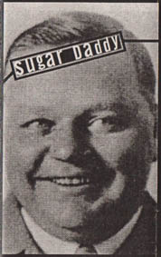
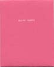

Sugar Daddy
index
Noise jazz with strict time limit scores.
Key inspirations: Borbetomagus, John Cage, Dada ...and the 7-14-7 VMA signal.
Youtube playlist here.
Releases:

* Demo cassette ("Fatty Arbuckle-sleeve"), recorded 14 December 1994.
1. 7-14-7
2.
7-1-4 [hommage à Hergé]
3.
6-6-6
David Liljemark: Saxophone, bass.
Jonas Nilsson: Guitar, saxophone.
* “Come to Daddy!” cd, extremely limited edition, January 1998.
1. Nine-2-five (live)
2. 7-14-7 (live)
3. 6-6-6
The cd was included in David's part of the group exhibition “Avtryck av verkligheten” at Forumgalleriet, Malmö 10-25 January 1998. Sugar Daddy was also represented on the "Avtryck 1998" cd-rom that came with the first 400 copies of the comics anthology book Allt för konsten (Optimal Press, 1998).

* "Nine-2-five" [müß05]
3" cdr released by Müßiggänger, April 2006, 33 numbered copies.
1. Nine-2-five (live)
Gigs (and studio recording sessions in italics):
*rehearsal room at Mejeriet, Lund, 14 Dec. 1994 (7-14-7, 7-1-4 [hommage à Hergé] and 6-6-6)
David Liljemark: Saxophone, bass.
Jonas Nilsson: Guitar, saxophone.
* Forumgalleriet, Malmö, 19 March 1995 (7-14-7).
David Liljemark: Saxophone.
Jonas Nilsson: Guitar.
Fredrik Jonsson: Clarinet.
Martin Fredrikson [Lexelius]: Saxophone.
Jakob Bäckman: Conductor.
* Smålands Nation, Lund, 17 May 1995 (7-14-7).
David Liljemark: Saxophone.
Jonas Nilsson: Guitar.
Martin Fredrikson [Lexelius]: Baritone saxophone.
Pär Moberg: Hurdy gurdy.
Jakob Bäckman: Conductor.
* * Lunds Konsthall, Lund, 21 Oct 1995 (nine-2-five [for Dolly P.] and 6-6-6). (Two separate gigs the same day).
David Liljemark: Saxophone.
Martin W. Andreasson: Guitar.
Pär Moberg: Hurdy gurdy.
Jörn Green: Saxophone.
Jakob Bäckman: Conductor.
* Klubb Rektal, Malmö, 2 Feb 1996 (nine-2-five).
David Liljemark: Saxophone.
Pär Moberg: Hurdy gurdy.
Jörn Green: Saxophone.
Carl Schonebohm: Clarinet.
Jakob Bäckman: Conductor.
* Smålands Nation, Lund, 21 Nov 1996 (Christine 16 [Kiss tribute]).
David Liljemark: Clarinet.
Jörn Green: Saxophone (+ voice).
Mattias Löwgren: Scratching.
Martin Sunnerdahl: Stylophone.
Jakob Bäckman: Conductor.
* Smålands Nation, Lund, 14 May 1997 (6-kärlek-6).
David Liljemark: Saxophone.
Jörn Green: Saxophone.
Carl Schonebohm: Scratching.
Mattias Löwgren: Guitar.
Jakob Bäckman: Conductor.
(XXX): found letter/poem tape (objet trouvé).
* Lunds Konsthall (on the roof), Lund 3 Aug 1997 (7-14-7 [trad., performed in seconds]).
David Liljemark: Saxophone.
Jörn Green: Saxophone.
Mattias Löwgren: Guitar.
Simon Gärdenfors: Clarinet.
Martin Fredrikson [Lexelius]: Conductor/lights.
* by Lund's train station, Kulturnatten 20 Sept 1997 (≈10).
David Liljemark: Saxophone.
Martin Sunnerdahl: Stylophone, harmonica.
Simon Gärdenfors: Clarinet.
Carl-Johan Ekman: Candy whistle.
Jakob Bäckman: Conductor.
* Forumgalleriet, Malmö 10 Jan 1998 (10-1-10 [10th gig, Jan 10]).
David Liljemark: Saxophone.
Fredrik Jonsson: Clarinet.
Pär Moberg: Didgeridoo.
Jörn Green: Harmonica.
Esbjörn Knutsson: Accordion.
Mattias Löwgren: Candy whistle
Carl-Johan Ekman: Candy whistle.
Jakob Bäckman: Conductor.
* Gula Villan, Universitetet, Stockholm 16 May 1998 (nine-2-five and Christine 16).
David Liljemark: Saxophone.
Fredrik Jonsson: Saxophone (I), clarinet (II) (+ voice (II)).
Simon Gärdenfors: Clarinet (I), saxophone (II).
Olof Hertting: Bass.
Carl-Johan Ekman: Harmonica (I), candy whistle (II).
Jakob Bäckman: Conductor.
* Lava, Kulturhuset, Stockholm 12 March 1999 (nine-2-five).
David Liljemark: Saxophone.
Fredrik Jonsson: Clarinet.
Björn Radon: Mandoline.
Lars Pettersson: Harmonica.
Pontus Lundkvist: Melodion.
Olov Viirman: Conductor.
* Lava, Kulturhuset, Stockholm 24 March 2000 (15 [for Andy Warhol]).
David Liljemark: Saxophone.
Marcus Gunnarsson: Noise-theremin (Elephantophone).
Henrik Kihlberg: Keyboard.
Christian Hörgren: Pocket trumpet.
Petter Sjölund: Bamboo flute, recorder.
Ingemar Bengtsson: Conductor.
* Roxy, Visby 1 June 2002 (18 [for Alice Cooper]).
David Liljemark: Saxophone.
Fredrik Jonsson: Clarinet.
Pontus Lundkvist: Scratching.
Nina Wähä: Guitar.
Karin Hagen: Saxophone.
Petter Herbertsson: Conductor.
* Konstakuten, Stockholm 6 Sept 2002 (15 [15 years (almost) since D.I.T. #1; 15th gig]).
David Liljemark: Saxophone.
Fredrik Jonsson: Clarinet.
Marcus Gunnarsson: Noise-theremin (Elephantophone).
Petter Sjölund: Saxophone.
Simon Gärdenfors: Guitar.
Olov Viirman: Conductor.
* Serieteket, Kulturhuset, Stockholm 16 Augi 2004 (3-1-3 [Donald Duck's car license plate]).
David Liljemark: Clarinet.
Fredrik Jonsson: Clarinet.
Christian Hörgren: Trombone.
Petter Sjölund: Zurna, whistle.
Anders Lundgren: Bamboo flute.
Ingemar Bengtsson: Conductor.
* Arvikafestivalen (”Film i Värmland”'s tent), Arvika 16 July 2005 (16 [backdrop: a screening of the 2002 video for nine-2-five]).
David Liljemark: Saxophone.
Simon Gärdenfors: Clarinet.
Björn Westerlund: Guitar.
Joel Munther: Saxophone.
Ulrike Salhoff: Whistle.
Calle Thörn: Bamboo flute.
Jakob Bäckman: Conductor.
* ak28 gallery, Stockholm 4 July 2008 (8½ [for Fellini]).
David Liljemark: Saxophone (+ whip).
Fredrik Jonsson: Clarinet.
Petter Sjölund: Clarinet.
Anna Liljemark: Clarinet.
Tomas Antila: Saxophone.
Marcus Nyblom: Bamboo flute.
Ola Hellsten: Conductor.
*Elektronmusikstudion EMS, Stockholm 21 Dec. 2014 (6:66)
David Liljemark: saxophone (x 2), clarinet, baby toy trumpet, guitar, keyboard strings.
Jan Liljekvist: violin (x 2).
* Kafé Klaver, Stockholm 11 June 2015 (6:66).
David Liljemark: Clarinet.
Fredrik Jonsson: Clarinet.
Christian Kastén: Clarinet.
Tomas Antila: Saxophone.
David Enemar: Saxophone.
Ola Forssblad: Saxophone.
Erik Hansson: Guitar.
Mats Jonsson: Conductor.